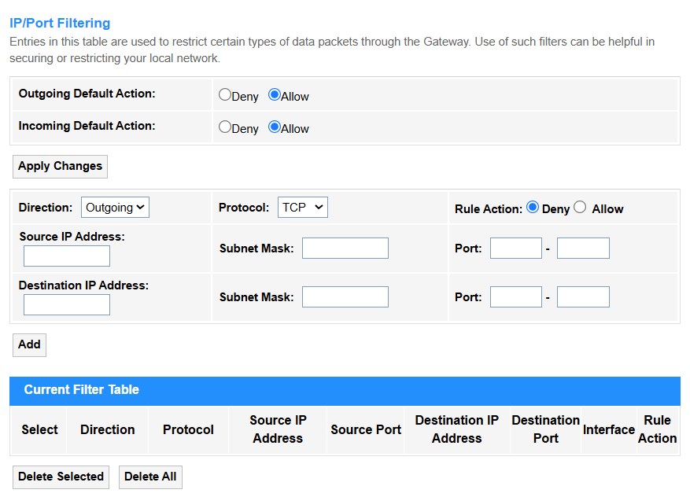

Services¶
Service¶
DHCP¶

• DHCP Mode:
1. None: DHCP is disabled completely and manual IP configuration is required.
2. DHCP Relay: The router forwards DHCP requests across subnets/VLANs (enterprise use, e.g., centralizing DHCP in a data center). Enter the DHCP Server IP address, or keep it default.

3. DHCP Server: The router assigns IP addresses to clients (default for home networks, manages IP pools/leases).

• LAN IP Address: Displays the router's IP address.
• Subnet Mask: Displays the router's subnet mask.
• IP Pool Range: Defines assignable IP addresses (e.g., 192.168.1.100-200).
• Subnet Mask: Determines network segmentation (e.g., 255.255.255.0 for /24).
• Max Lease Time: Sets duration (seconds) before IP renewal (e.g., 86400 = 1 day).
• Domain Name: Specifies local domain suffix (e.g., home.lan).
• Gateway Address: Default route for client traffic (e.g., router IP 192.168.1.1).
• DNS Option:
- Use DNS Proxy: The router acts as a middleman, caching and forwarding DNS requests (e.g., for parental controls or ad-blocking).
- Set Manually: Directly specifies custom DNS servers (e.g., 1.1.1.1 or 8.8.8.8), bypassing ISP defaults.
- From Default Route WAN: Automatically uses the DNS servers provided by your ISP via the WAN connection.
• Port-Based Filter: Blocks/allows DHCP requests based on the Ethernet port numbers (L2 physical interface), ideal for securing specific network jacks in offices or labs.

• MAC-Based Filter: Whitelists/blacklists devices by their unique MAC addresses (L2 hardware ID), commonly used for IoT device management or guest network control.

4. DHCP Client: An upstream DHCP server (common in ISP modem-router setups) assigns an IP address to the router(client).

Dynamic DNS¶
Dynamic DNS (DDNS) supports automatically updating a domain name with your router's changing public IP address, allowing stable remote access (e.g., for home servers or cameras).
• Enable: Tick to activate automatic IP updates for your dynamic domain (essential for remote access with changing ISP IPs).
• DDNS Provider: Selects the DNS service.
① DynDNS.org: Pioneer DDNS service offering both free (legacy) and enterprise solutions with enhanced security.
-
Username: Enter your registered DynDNS account email.
-
Password: Enter a DynDNS API Token (generate via dyn.com) — legacy passwords no longer work.
② TZO: Business-oriented provider featuring real-time IP updates and integrated email/SMS alerts.
-
Email: Enter your TZO-registered email address.
-
Key: Input your unique TZO Authentication Key (found in your TZO account dashboard).
③ No-IP: User-friendly free tier (21-day renewal) with port forwarding tools, ideal for home labs.
-
Username: Enter your registered No-IP account email.
-
Password: Use your No-IP account password (same as website login).
• Hostname: Enter your custom domain (e.g., yourname.ddns.net) that will point to the router's current public IP.
• Interface: Specifies which WAN connection (e.g., PPPoE, 4G/5G) to monitor for IP changes.
• Add: Click to add the new entry into the Dynamic DNS Table.
• Modify: Click to modify the selected entry in the Dynamic DNS Table.
• Remove: Click to delete the selected entry in the Dynamic DNS Table.
• Update: Click to update the Dynamic DNS Table.
IGMP Proxy¶
• IGMP Robust Count: Defines how many consecutive missed queries trigger a group timeout (typically 2-5). Higher values improve stability in lossy networks.
• Last Member Query Count: Number of last-member queries sent before concluding no members remain (default=2). Reduces premature group deletion.
• Query Interval: Time (seconds) between general membership queries (default=125). Shorter intervals detect leaves faster but increase traffic.
• Query Response Interval: Max time members have to reply to a query (default=10s). Must be less than Query Interval to avoid collisions.
• Group Leave Delay: Grace period before pruning a group after last leave message. Prevents video glitches during channel switches.
• Apply Changes: Click to save and activate the settings or changes.
UPnP¶
UPnP (Universal Plug and Play) supports automatically opening and managing router ports for devices/apps that request external access (e.g., gaming consoles or VoIP), eliminating manual port forwarding.
• UPnP: Select Disable to block automatic port requests (recommended for security), or Enable to allow devices to dynamically open ports (convenient for gaming/P2P).
• WAN Interface: Selects which internet connection (e.g., PPPoE, 5G) UPnP applies to.
• Comment: Make some notes to label rules (e.g., "Xbox NAT Open") for the entry.
• Local IP: Enter the internal device's IP (e.g., 192.168.1.100) receiving forwarded traffic.
• Protocol: Select TCP, UDP, or both for traffic type (e.g., TCP for web browsing, UDP for VoIP).
• Local Port: Enter the Device's service port (e.g., 3074 for Xbox Live).
• Remote Port: Enter External port triggering forwarding (often same as Local Port).
• Security Tip: Enable UPnP only for trusted devices with static IPs.
• Apply Changes: Click to save and activate the settings or changes.
• Refresh: Click to update the UPnP Current Port Forwarding Table.
RIP¶
• Routing Protocol: Select to enable RIP for path selection.
• Interface: Specifies which network ports participate in RIP updates (e.g., eth0/WAN).
• Receive Mode: Select to decide how RIP updates are processed (None/RIP1/RIP2/Both).
• Send Mode: Select to define RIP version for outgoing updates (None/RIP1/RIP2/RIP1COMPAT).
• Add: Click to add entries into the RIP Config Table.
• Select: Tick to select entries to delete.
• Delete Selected: Delete the selected entries in the table.
• Delete All: Delete all the entries in the table.
Firewall¶
IP/Port Filtering¶

• Outgoing Default Action: Firewall allows or denies the traffic from LAN to WAN (typically Allow for user convenience).
• Incoming Default Action: Firewall allows or denies the unsolicited traffic from WAN to LAN (usually Deny for security, blocking hackers/scanning).
• Apply Changes: Click to save and activate the settings or changes.
• Direction:
- Outgoing: Controls traffic from LAN to WAN (e.g., blocking social media).
- Incoming: Manages WAN-to-LAN traffic (e.g., allowing SSH access).
• Protocol: Select TCP (web/email), UDP (video/VoIP), ICMP (ping), or All for any protocol.
• Rule Action: Select Allow to permit traffic or Deny to block or send error.
• Source/Destination IP address: The target device’s IP (e.g., 192.168.1.100 for a local server).
• Subnet Mask: Defines the network scope (e.g., /24 = 255.255.255.0 for a local subnet).
• Port: The service’s port number (e.g., 80 for HTTP, 443 for HTTPS).
• Add: Click to add the entry into the Current Filter Table.
• Select: Tick to select entries to delete.
• Delete Selected: Delete the selected entries in the table.
• Delete All: Delete all the entries in the table.
MAC Filtering¶

MAC Filtering for bridge mode allows or blocks specific devices (identified by their MAC addresses) from accessing the network when the router operates in bridge mode, acting as a transparent pass-through while maintaining MAC-based access control.
• Outgoing Default Action: Select to Allow or Deny the default behavior for outgoing traffic when no MAC filter rules match.
• Incoming Default Action: Select to Allow or Deny the default behavior for incoming traffic if no rules apply (e.g., Allow for trusted networks).
• Apply Changes: Click to save and activate the settings or changes.
• Direction: Select to the direction for traffic flow, either Incoming for LAN→devices or Outgoing for devices→WAN.
• Source/Destination MAC Address: Enter the sender’s (Source) or receiver’s (Destination) hardware address for the filtered traffic.
• Rule Action: Select to Deny or Allow the traffic matching the rule.
• Add: Click to add the MAC filtering rule configured above into the Current Filter Table.
• Delete Selected: Delete the selected entries in the table.
• Delete All: Delete all the entries in the table.
Port Forwarding¶
Port Forwarding redirects external traffic from specific ports to an internal device (e.g., for gaming servers or remote access). It requires static IP/DHCP reservation for stable operation.
• Port Forwarding: Select to Enable the Port Forwarding configuration.
• Application: Select the predefined profiles (e.g., "Web Server" or "Xbox Live") that auto-fill common port ranges.
• Comment: Make some notes to label rules (e.g., "Security Cam Feed").
• Local IP: Enter the internal device’s IP address receiving forwarded traffic (e.g., 192.168.1.100).
• Local Port from/to: Enter the port range on the internal device (e.g., 80-80 for HTTP).
• Protocol: Select TCP, UDP, or both for traffic type (e.g., TCP for web browsing).
• Remote IP: Enter the external source IP address(es) allowed to trigger port forwarding (e.g., only traffic from 203.0.113.5 can access). Leave blank to allow all public IPs.
• Remote Port from/to: The external port range triggering forwarding (e.g., 8080-8080 for alternate HTTP access).
• Interface: Selects which network connection the port forwarding rule should apply to, ensuring traffic is routed through the correct external link.
• Apply Changes: Click to save and activate the settings or changes.
• Add: Click to add the Port Forwarding rule configured above into the Current Port Forwarding Table.
• Delete Selected: Delete the selected entries in the table.
• Delete All: Delete all the entries in the table.
URL Blocking¶

URL Blocking blocks access to specific web addresses (e.g., socialmedia.com), often used for parental controls. It works at the application layer but may struggle with HTTPS traffic.
• FQDN (Fully Qualified Domain Name): Enter the domain to be blocked access to complete web addresses (e.g., www.example.com), including all subdomains and paths under the domain. (Effective for both HTTP/HTTPS when DNS-based filtering is enabled.)
• Keyword: Enter the specific text patterns (e.g., "social" or "gamble") in URLs or page content to be blocked (Limited to plain HTTP traffic unless SSL inspection is configured.)
• Apply Changes: Click to save and activate the settings or changes.
• Add: Click to add the URL blocking rule configured above into the URL Blocking Table or Keyword Filtering Table.
• Delete Selected: Delete the selected entries in the table.
• Delete All: Delete all the entries in the table.
Domain Blocking¶

Domain Blocking prevents access to entire domains and subdomains via DNS filtering. More comprehensive than URL blocking and covers HTTPS sites.
• Domain: Enter the exact website domain name (e.g., example.com) to be blocked, preventing access to all its subpages and services under that domain.
• Apply Changes: Click to save and activate the settings or changes.
• Add: Click to add the newly-configured Domain blocking rule into the Domain blocking Table.
• Delete Selected: Delete the selected entries in the table.
• Delete All: Delete all the entries in the table.
DMZ¶

DMZ (Demilitarized Zone) exposes one internal device directly to the internet, bypassing firewall protections.
• DMZ Host: Select Disable to apply normal firewall protection to all devices (recommended for security); or Enable to bypass firewall completely for one specified device, and it is in high risk, used only for testing/isolated devices.
• DMZ Host IP Address: Enter the internal device's IP (e.g., 192.168.1.100) that will be fully exposed to the internet when DMZ is enabled.
• Apply Changes: Click to save and activate the settings or changes.